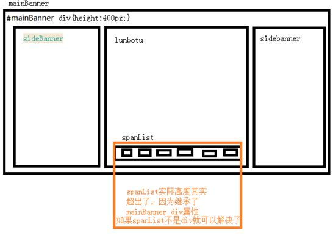

朱何优1号店测试总结
昨天做的1号店碰到的那个问题:mainBanner下面有四个同级的div:sideBanner(类名),lunbotu(ID),sideBanner(类名),spanList(ID)前三个浮动，最后一个定位到lunbotu下面
当鼠标从mainBanner上面进入时鼠标会从默认样式变成手型，但从下面进入的时候还未进入就已经是手型了,影响到了轮播效果
起初我以为是mainBanner或者lunbotu,sideBanner出了问题，各种调样式调了好久还是原来的结果。把鼠标移到右边的时候发现，浮动的第三个sideBanner宽度不够，进入的时候有一部分变成手型有一部分还是默认样式，于是把这个div的宽度调大一点，也给mainBanner和lunbotu(ID),sideBanner都加了边框进行测试，发现并没有内容溢出而导致的情况。后面，我发现并不是从下面每个地方进入前都会先是手型，有些地方是从默认鼠标样式进入后才变成手型的。而且我那些地方刚好是spanList下面的那些区域，于是马上给spanList加了个背景测试，发现spanList的内容超出了!然后瞬间顿悟了！就是这里的问题！

仔细审查了下CSS的样式，发现mainBanner下的div我设置成了统一样式#mainBanner{height:400px;}其实开始我想用li做的，但想了下ul li要两个标签而div只要一个，懒了一下就忽略了这个细节。
当然，这只是个小问题，只是想通过这个问题引发一些思考：怎么样高效查错和少犯错误？我大概总结了如下几点方法(万年冷板凳ol派上用场了！)
- 首要的当然是仔细认真，尽量避免单词写错等低级错误，没用过的属性方法先测试一下再使用不要想当然！想清楚了再添加不要囫囵吞枣做过之后自己都看不懂了。
- 然后出现问题了要快速定位问题，仔细回想是加了哪个属性或写了哪条语句触发的错误，一步步缩小范围排查。涉及逻辑较复杂一点的console或alert是必要的，涉及循环等更复杂些的要设置断点！再者，用笔写出来或者画图其实更容易理清思路！
- 关于学习方法的感悟：我认为最重要的自然是兴趣，有兴趣去研究它，不是为了别人学而是真的为了自己学，心中时刻明确这个概念。这话听起来很虚但却是最实在的。其次就是理解记忆，我喜欢查单词查出处，从源头去理解函数方法的意义，很多根据单词就见名之义了。
- 多利用一些工具或插件，可以很快地提升效率。gif录屏工具，一图可以少写很多话语了。建立一个错题包是很必要的。